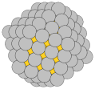
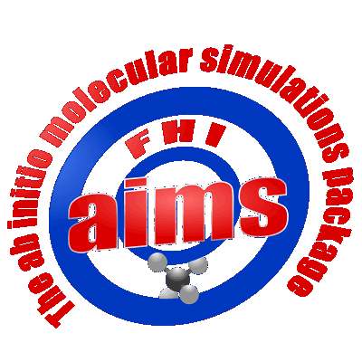
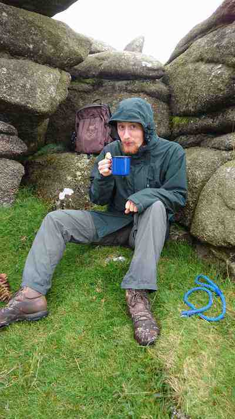

| Welcome | |
|
Hi! You've reached the group pages of Dr. Andrew Logsdail. We are interested in Computational Chemistry, and are based in the Cardiff Catalysis Institute. |
 |
|
Here you will find information about who we are, what we do and how we do it. Please have a browse and ask questions! |
|
|
News:Welcome to Thomas and Amarjit for their 4-week Nuffield placements! (25/07/2019) (Follow @a_logsdail for more regular updates!) |
|
| Software | |
|
We develop: ChemShell (QM/MM)FHI-aims (QM) NWChem (QM) GULP (MM) Tools We use: ASEGPAW (QM) OPTIM Gamess-UK (QM) DL_POLY (MM) Phonopy Bader Charge Analysis DDSCAT |
 |
| Current Members |
|
Group Leader:
Dr. Andrew Logsdail |
|
| email: | LogsdailA [at] cardiff.ac.uk |
| telephone: | +44 2922 510 162 |
| twitter: | @a_logsdail |
|
PhD Students:  Harry Jenkins
"QM/MM Investigations of the Structural, Electronic, and Catalytic Properties of TiO2 Surfaces" |
|
| email: | JenkinsHJ1 [at] cardiff.ac.uk |
|
Stefan Nastase
"QM/MM study of the Methanol-to-Hydrocarbons process" |
|
| email: | NastaseS [at] cardiff.ac.uk |
|
Andres Richards
"Ethanol Upgrading Catalysis for Advanced Biofuels - A Combined Computational Experimental Study" |
|
| email: | RichardsA18 [at] cardiff.ac.uk |
|
Mahmoud Mansi
"Controlling nanoparticle morphology through informed choice of polymer ligands" |
|
| email: | MansiM [at] cardiff.ac.uk |
| Past Members (Gone but not forgotten!) |
|
PhD Students: Anna Gould (2013/17) |
|
MSc/MSci/MChem Students: Rowan Hanson (2018/19) Syeda Sara Junaid (2018/19) Matthew Shaw (2019) Daniel Latham (2018) Scott Allan (2017/18) Russell Cross (2017) Luke Perrott (2016/17) Yisha Xu (2015/16) Shiny Mathew (2014/15) |
|
BSc Students: George Woodburn (2018/19)
James Rodway (2017/18) Prabesh Katawal (2016/17) Tom Davies (2016/17) |
|
Summer Students: Samuel Watts (2018, CCP5)Ioan Lloyd (2018, Nuffield) Priyan Patel (2018, Nuffield) Sophia Proud Joe Jackson-Masters (2017, CCP5) Stephen Lloyd-Brown (2017, Nuffield) Louis Munro (2017, Nuffield) Daniel Nunes (2014)
|